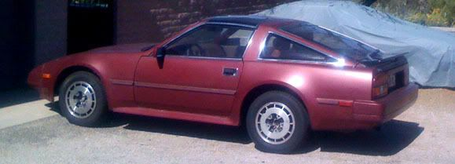

-
sorry for posting in the wrong section,Well i finally went to change my fuel filter after relieving the fuel pressure properly,then i got the old filter off and alittle fuel squirted out not a problem, put the the new one in, put the fuel line back on the fuel rail,then i go to change the fuel tank to fpr fuel line and hella fuckin fuel is just goin everywhere i was so fuckin pissed.
Why didn't the pressure in that line relieve? now i got fuel on the whole pass side, i cleaned it up the best i could and its not wet anywhere but i can still smell it in that area,do you guys think thats still a big fire hazard even though its all dried up?
_________________87 2by2 na2turbo,AE shell comin soon
-
The fuel was under pressure, relieving the pressure gets rid of this (duh) but there will still be some fuel in the lines… It just stops it from squirting in your face when you pull a line off. -
You should be fine as far as the mess, if the puddles were wiped up.
Just double check around the clamps with engine running to make sure
fuel isn't seeping out.imagination is a virtue -
thanks guys87 2by2 na2turbo,AE shell comin soon
-
take your gas cap off when you change your filter. it will keep gas from coming out all over the place. when you pull the lines running to the filter put a rag under it so fuel doesn't spill everywhere -
thanks ill remember that when i change it next time87 2by2 na2turbo,AE shell comin soon
-
Ha, I just replaced mine too, making sure I took the gas cap off, yet I still got a shower of poison. Those hoses are tricky to pull off - I don't think the filter had been replaced for a looong time. Let's hope this fixed my intermittent starting problem - seems to have so far. Petrol-covered fingered crossed. -
I couldn't even get the hoses off on mine, I ended up cutting them and putting new ones on.
Also, unplug your fuel pump (blue harness under hatch carpet) while running, let the engine die, then crank it a few times. This relieves the fuel system of pressure. And of course keeping the tank cap off while working on it. -
the fsm actually tells you what to do to drain the lines safely (just in case there's an idiot working on the car) -
It's a couple tablespoons of fuel. Anyone with a show car will know better, and everyone else is a sissy for worrying about getting gasoline on their hands. Its a carcinogen, you will all get cancer now.G-E wrote: (just in case there's a big sissy working on the car) -
I wouldn't think the "gap cap removal" would work… since fuel pumps have one-way check valves…
Just an observation :langue1SIKZ31 -86 SlickTop- R.I.P. 03/01/10 … Parted out :-(
… New Project: LS1 Miata. Complete. 510whp. 2500lbs.
1 Month Away from Rear Mount 76 --> 650-700whp.


Copyright © 2006–. All rights reserved. Privacy Policy